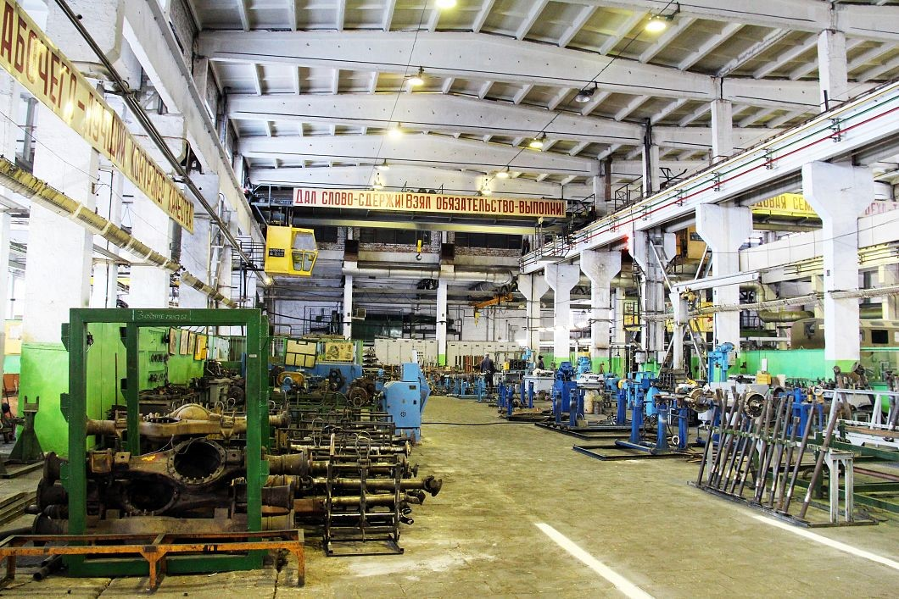

ЗАТО Озёрный
Экономика
Завод железобетонных конструкций
Завод ЖБИ ( быв.Калинин Граждан Строй) в поселке Выползово - одно из крупнейших предприятий региона. Построен в 1972 году в расцвет инженерной мысли Советского Союза. На сегодняшний день завод компании ОтКом участвует в ряде крупнейших инфраструктурных проектах региона, таких, как "Строительство СПАД Москва-Санкт-Петербург, М-11", Строительство "Амиак-4" для нужд завода "Акрон" в г.В.Новгород, строительство "Балтийской Трубопроводной Системы, БТС-2", Строительство портовых комплексов Санкт-Петербурга и г.Усть-Луга и других. Компания "ОтКом" является одним из крупнейших производителей ЖБИ в европейской части России. Специализацией производства является выпуск аэродромных преднапряженных плит ПАГ-14, на сегодняшний день идет наладка и запуск линии по выпуску свай и колонн. Также изготавливают многопустотные плиты перекрытий ПК , перемычки, фундаментные блоки, лестничные марши, колодезные кольца, элементы ливневой канализации и теплотрасс.
ОАО «Спецтехника» (ранее ФГУП «75 Авторемонтный завод»)

Специализированное предприятие по изготовлению и ремонту специальных заправочных средств, эксплуатируемых в интересах Ракетных войск и Российского Авиационно-космического агентства. Основано в годы Великой Отечественной войны. Основные виды деятельности: • Ремонт систем заправки топливом и сжатыми газами (керосин, гептил, амил, перекись водорода, воздух, азот) как в стационарном, так и в подвижном исполнении. Капитальный ремонт проводится на автошасси ГАЗ, ЗИЛ, УРАЛ, КАМАЗ любых модификаций. а также на всех узлах и агрегатах, входящих в их состав. На предприятии производится замена силового агрегата автошасси Урал-375 на силовой агрегат ЯМЗ-236. • Ремонт спецагрегатов типа: УМП-350 (унифицированный моторный подогреватель), УКС-400 (унифицированная компрессорная станция), 8Т311М (обмывочно-нейтрализационная машина), РМТ-35М1 (регламентная машина трансформаторная), ПМК-10УМ (подвижная мастерская по ремонту кабелей), РМК-10М1 (ремонтно-регламентная машина), КИП-УАМ (контрольно-измерительный пункт) и т.п.Изготовление стационарных систем вентиляции и обеспечения температурно-влажностного режима. • Изготовление металлоконструкций средних размеров, в том числе с применением сварки высоколегированных сталей и алюминиевых сплавов. На предприятии работает лаборатория неразрушающего контроля и диагностики объектов, техническое диагностирование и экспертное обследование объектов котлонадзора и подъемных сооружений, отработавших нормативный срок службы; монтажные и пусконаладочные работы на объектах котлонадзора и вспомогательного оборудования, входящих в состав систем заправки ракетно-космических комплексов.
7-я Гвардейская ракетная дивизия РВСН (в/ч 14245) — гвардейское Режицкое краснознамённое ракетное соединение РВСН
14 июля 1943 года на базе 79-го гвардейского пушечно-артиллерийского полка в районе Старой Руссы была сформирована 19-я отдельная гвардейская пушечно-артиллерийская бригада. 27 июля 1944 года за мужество и героизм личному составу в боях за освобождение города Резекне объявлена благодарность Верховного Главнокомандующего и присвоено почетное звание «Режицкая». В период Великой Отечественной войны бригада с боями прошла от Старой Руссы до Салдуса (Латвия). На протяжении всей войны бригадой командовал полковник Соколов М. И. Действия всего личного состава бригады были высоко оценены Верховным Главнокомандующим. 1200 человек были награждены правительственными наградами В соответствии с Директивой Министра обороны Союза ССР от 25 мая 1960 года, в июне 1960 года на базе 19-й гвардейской пушечной артиллерийской Режицкой бригады была сформирована 7-я ракетная инженерная бригада с дислокацией в посёлке Выползово Калининской области (Бологое-4). Директивой Министра обороны СССР от 30 мая 1961 года 7-я ракетная бригада преобразована в 7-ю ракетную дивизию центрального подчинения. 16 июля ей, с целью сохранения боевых традиций и памяти о боевых заслугах, совершенных воинами 19-й отдельной гвардейской пушечной артиллерийской бригады в годы войны, было присвоено почетное наименование «Гвардейское Режицкое». В состав дивизии входили: 4 ракетных полка, ремонтная техническая база , узел связи, обеспечивающие подразделения. 16 июля 1961 года соединению вручено Красное Знамя. 16 августа 1961 года дивизион капитана 3 ранга Л. С. Швыгина на полигоне Капустин Яр произвёл первый в истории дивизии пуск ракеты Р-5, получив оценку «хорошо». В декабре 1962 года на полигоне Байконур проведён первый пуск штатной для дивизии ракеты Р-16. 24 мая 1963 года, вскоре после окончания Карибского кризиса, в обстановке строжайшей секретности дивизию посещали Н. С. Хрущёв, кубинский лидер Фидель Кастро, Министр обороны СССР Маршал Советского Союза Р. Я. Малиновский и Главнокомандующий РВСН Маршал Советского Союза Н. И. Крылов. Хрущёв знакомил Кастро с новой ракетой Р-16. С 1965 года в дивизии началась подготовка к строительству БСП ракетных комплексов нового поколения с ШПУ отдельных стартов («ОС»). Во исполнение директивы Генштаба от 31 марта 1966 года сформированы 6 ракетных полков «ОС». 1 ноября 1967 года награждена Памятным Знаменем ЦК КПСС, Президиума Верховного Совета СССР и Совета Министров СССР за успехи в ратном труде в честь 50-летия Великой Октябрьской социалистической революции. С апреля 1970 года по 30 июня 1990 года дивизия входила в состав 50-й ракетной армии (г. Смоленск). В апреле 1970 года ещё пять полков начали перевооружаться на ракетный комплекс с УР-100. С 1973 года начаты работы по постановке на боевое дежурство новых комплексов. 30 апреля 1975 года указом Президиума Верховного Совета СССР дивизия награждена орденом Красного Знамени. 3 октября 1978 года встали на боевое дежурство два ракетных полка с модернизированным комплексом. 14 декабря 1979 года дивизия была награждена вымпелом МО СССР «За мужество и воинскую доблесть».С марта 1986 года на базе дивизии проводились сравнительные испытания колёсных пусковых установок , ракетного комплекса «Целина-2». Для 8- и 12-осных шасси собственной массой по 65 тонн и грузоподъёмностью по 150 тонн были построены огромные ангары и специальные участки дорог с мостами и развязками для исследования разрушающего воздействия на асфальтобетонное покрытие. Все работы проводились только в ночное время, в режиме строжайшей секретности. Испытания были завершены в сентябре 1987 года. В 1994 году последний «ОСовский» ракетный полк был снят с боевого дежурства. 30 декабря 1994 года первый «ОСовский» полк был переведён на ПГРК «Тополь» Осенью 1996 года боевыми расчётами ракетных полков дивизии на полигоне Плесецк проведено два успешных учебно-боевых пуска.